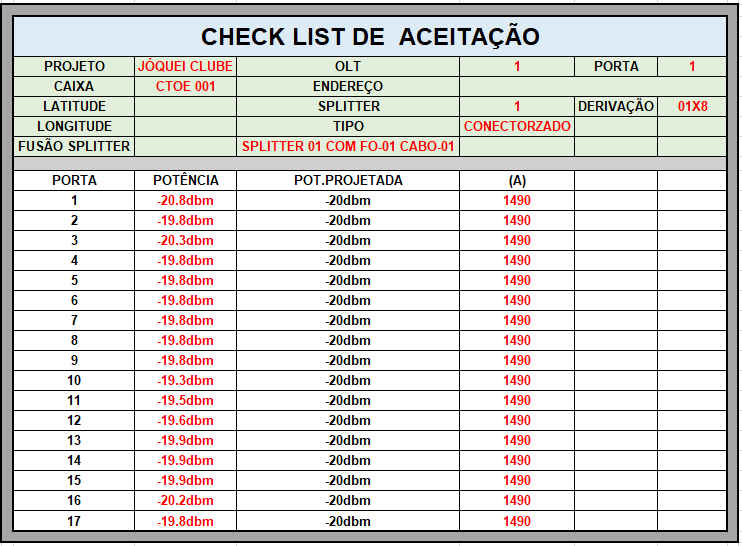
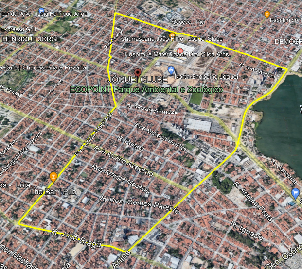
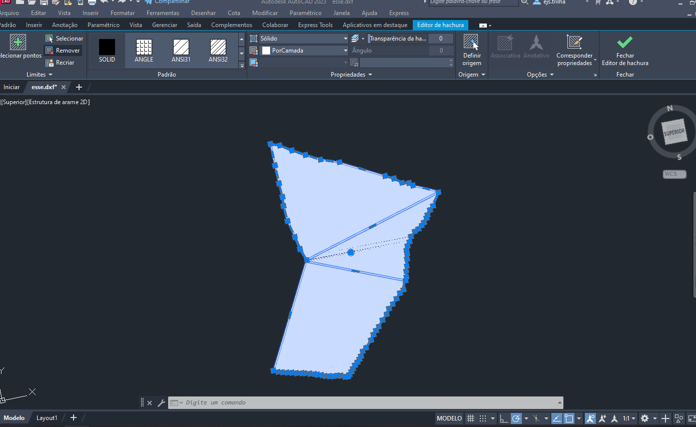
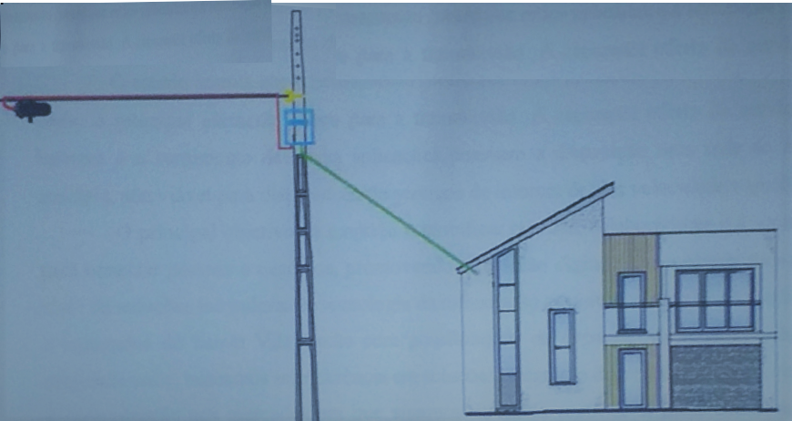

📌PROJETO DE REDES DE COMPUTADORES
1.RESUMO EXECUTIVO
O Grupo Arquiteto de Soluções, criado em outubro de 2017, em um cenário de mercado em constante evolução, inovar e empreender é essencial para o desenvolvimento pessoal e coletivo, a conquista de clientes se tornou um grande desafio para as empresas devido a ampla concorrência.
Para que se possa alcançar tal objetivo uma série de fatores podem contribuir para o sucesso de uma empresa atualmente. Fatores como o atendimento, qualidade do serviço e o serviço de pós-venda de qualquer que seja o produto e para que o cliente seja fidelizado a empresa.
É de suma importância que os empresários e empreendedores em geral estejam atentos as novas tendências de mercado e as necessidades do cliente para que possa oferecer um produto e serviço de qualidade, assim o seu produto obterá o sucesso esperado.
Pensando nisso estamos implantando um provedor de internet utilizando fibra óptica para prover uma conexão com a internet de alta qualidade e estabilidade no bairro jóquei clube na cidade de Fortaleza no Ceará, para alcançarmos esse feito utilizamos o atendimento FTTH aliado a tecnologia de rede Gpon, com links de até 300Mbps com alta disponibilidade de links seja para ambientes domésticos quanto para comerciais.
Além da conexão com todos os quesitos citados anteriormente, também nos atentamos ao valor final que o cliente irá pagar pelo serviço. A mensalidade cobrada pela nossa empresa será consideravelmente menor comparada a provedores locais atuais, isso mostra a preocupação da empresa junto aos clientes, conseguindo aliar preço justo e qualidade no serviço.
1.1. OBJETIVOS
Fornecer a arquitetura adequada para implementação do provedor de internet, com foco de melhorar a qualidade de conexão com a internet dos moradores do bairro Jóquei Clube, e posteriormente oferecer o melhor serviço comparado as opções atuais e com excelência em atendimento para o cliente. .
1.2. JUSTIFICATIVA
Visando a existência de poucas opções de provedores de internet disponíveis no bairro e ampla concorrência, iremos prover uma conexão de alta qualidade através do uso da tecnologia de fibra ótica a preços acessíveis, juntamente com o bom atendimento ao cliente promovendo a inclusão digital dos habitantes do bairro jóquei clube
1.3. ESTRUTURA DO PROJETO
Para uma melhor organização e entendimento, o projeto foi organizado em capítulos. No capítulo 2 será apresentado as tecnologias utilizadas para o desenvolvimento da rede, com uma breve descrição sobre Gpon e Criptografia AES 128. A seguir no capitulo 3, uma breve análise e Especificação da Rede, será apresentado algumas ferramentas utilizadas no desenvolvimento desse projeto, Zabbix, AutoCad Maps, Google Earth, Qgis. No capítulo 4, falamos sobre as topologias utilizadas no projeto da rede, topologia em anel e árvore. No capítulo 5 contém os levantamentos dos requisitos para bom funcionamento da rede. No capítulo 6, contém os testes a serem realizados para garantir o bom funcionamento da rede, teste de potência e conexão. No capítulo 7, temos o protótipo do desenvolvimento do projeto, identificação da área a ser atendida, distribuição das caixas, conexões entre caixas e plano de emenda. No Capitulo 8, temos as considerações finais.
2.ESPECIFICAÇÃO DA TECNOLOGIA QUE SERÁ IMPLEMENTADA NA REDE
📍GPOM significa (GIGABIT PASSIVE OPTICAL NETWORK) ou Rede Optica Passiva Gigabit, o GPON é uma rede passiva, que quer dizer que entre a OLT (Optical Line Terminal) e a ONU (Optical Network Unit), ou mais especificamente entre o concentrador da rede e os clientes, não existe nenhum elemento ativo/energizado. Ela é uma rede óptica com um tráfego acima de 1 Gbps, ou 1 Gigabit por segundo e é normalizada pelo órgão ITU-T G.984, que dentro da norma há várias partes que se referem às especificidades da tecnologia, como a camada física, hardware, protocolos de comunicação a OLT e as ONU. Na norma fala sobre todo o funcionamento da rede GPON, desde o G.984.1 até G.984.5.
Estrutura da rede para melhor entendimento do projeto e do funcionamento da rede iremos mostrar os principais elementos da rede. A estrutura das redes GPON é normatizada pelo órgão ITU-T G.984, que descreve todo o seu funcionamento.

📍OLT significa terminal de Linha Óptica em português. Ele está localizado na central (POP), constituindo-se em porta de enlace entre a rede de acesso e a rede metropolitana. A OLT é responsável por controlar e administrar a transmissão de dados para as ONU's, porém, é preciso de um receptor que opere em modo rajada (volumes esporádicos de tráfego). Rajadas são conjuntos de bits vindo de uma determinada ONU. Portanto, é preciso controlar os diferentes níveis de amplitude do sinal, já que as ONU's estão localizadas em determinados locais distantes da OLT.

📍ONU significa Unidade de Rede Óptica em português. A sua função principal é fornecer acesso aos usuários, concentrando o tráfego até que possa transmiti-los. A ONU está localizada em distâncias longas ou curtas do usuário final. Além disso, quando a OLT envia mensagens em broadcast, as ONU's reconhecem apenas mensagens destinadas a ela e ignoram as demais. Outra funcionalidade importante é a conversão do sinal óptico em elétrico para os dispositivos padrões, como telefones, computadores e outros equipamentos de aplicação do usuário final.

📍SPLITTER é um dispositivo passivo capaz de combinar e dividir o sinal óptico. Em sentido downstream (Rio abaixo) este dispositivo irá dividir o sinal de entrada e o direciona para todas as portas de saída que estão ligadas com as ONU's.


2.1. CRIPTOGRAFIA AES-128
Os benefícios da fibra optica são bem conhecidos no meio da TI, além da sua capacidade de transmissão e tempo de vida útil, apresenta bons argumentos quando se trata de segurança. Um dos principais pontos é a complexidade que se tem ao tentar interceptar um sinal óptico sem interromper o tráfego existente. Para melhor entendimento a transmissão entre OLT e ONU funciona da seguinte forma: No sentido de downstream os dados são enviados em broadcast (envio não direcionado). As informações de cada ONU são divididas no tempo (TDM-Time Division Multiplexing). Desta forma, toda informação provida pelo OLT é repassada a todas ONU's da rede, mas cada ONU filtra as informações que lhe são destinadas (ZTE, 2011), a abaixo ilustra esta forma de comunicação. Uma forma para se garantir a segurança dos dados transmitidos na rede é a utilização de criptografia, sendo utilizado o algoritmo Advanced Encryption Standard (AES).

A Criptografia com AES-128 transforma pacotes de dados de texto simples e os transmitem em texto cifrado. Em suma, o algoritmo AES-128 usa uma chave para alterar dados de texto simples de 128 bits em outros dados de texto cifrado de 128 bits para transmissão usando uma série de operações matemáticas. Em seguida, a extremidade de recebimento usa uma chave para descriptografar o texto cifrado.
2.1.1. AUTENTICAÇÃO DA ONU
Para que uma ONU inicie seu tráfego na rede ela deve ser reconhecida pela OLT através de seu número de série único. A OLT pode ser configurada para impedir que qualquer ONU seja ativada sem a autorização do administrador.
2.1.2. ENCAMINHAMENTO SEGURO
A OLT permite o uso de um recurso chamado Encaminhamento Seguro, quando o Encaminhamento Seguro está habilitado para uma VLAN, o serviço forma-se ciente da sessão de IP e espiona as mensagens de oferta de DHCP para as ONU's e armazena em cache as informações de endereço IP e DHCP alocadas. Se o tráfego não tiver origem no endereço correto, o tráfego será descartado, isso também funciona para dispositivos conectados com endereços IP estáticos, a OLT passa comparar o endereço IP configurado com o endereço de origem do dispositivo configurado estaticamente no quadro de dados. Se eles não corresponderem, o tráfego será descartado.
2.1.3. MAIS SEGURANÇA
Aqui segue mais algumas medidas a serem tomadas para aumentar a segurança da rede.
◾ Limitar o número de endereços MAC que podem ser gravados pela OLT.
◾ Bloquear Movimentos de MAC dentro da OLT.
◾ Lista de Controle de Acessos.
◾ Segurança 802.1xPort.
◾ PON Card Security.
3.ANÁLISE E ESPECIFICAÇÃO DA REDE
Neste capitulo descreve as ferramentas utilizadas para o desenvolvimento e implantação do nosso projeto.
3.1. ZABBIX
Zabbix é um software que monitora vários parâmetros de rede de computadores e saúde e integridade de servidores. Zabbix usa um mecanismo de notificação flexível que permite os usuários configurarem alerta de e-mail e sms baseado em praticamente qualquer evento. Isto permite uma rápida reação para problemas em servidores Zabbix oferece relatórios e visualização de dados com excelentes características baseado nos dados armazenados. Isso faz do Zabbix ideal para o planejamento de capacidade e da saúde dos servidores pode ser avaliado a partir de qualquer localização. Devidamente configurado, Zabbix pode desempenhar um papel importante no controle da infraestrutura de TI. Isto é igualmente verdadeiro para as pequenas organizações com poucos servidores e para as grandes empresas com muitos servidores.
Dashboard

Hosts

Mapa
3.2. AUTOCAD MAP
O software AutoCAD Map 3D é um aplicativo de planejamento e gerenciamento de infraestruturas, onde será feito todo o projeto com caixas e cabos a serem implantados de forma Georreferenciada.

3.3. GOOGLE EARTH
Google Earth é um programa de computador desenvolvido e distribuído pela empresa estadunidense do Google cuja função é apresentar um modelito tridimensional do globo terrestre, construído a partir de imagens de satélite.


3.4. QGIS
QGIS é um software livre com código-fonte aberto, multiplataforma de sistema de informação geográfica que permite a visualização, edição e análise de dados georreferenciados.

4. TOPOLOGIAS UTILIZADAS NO PROJETO
📍 TOPOLOGIA EM ANEL
Para a construção da nossa rede primária usamos uma construção em anel, onde temos duas abordagens saindo do concentrador, sendo que as duas pontas se encontram em uma caixa de emenda fechando totalmente uma redundância em anel óptico.

📍 TOPOLOGIA ÁRVORE
Das caixas de derivação em diante utilizamos topologia em árvore com o intuito de ramificar ao máximo a rede.

5. LEVANTAMENTO DE REQUISITOS
📍 TESTES DURANTE A CONTRUÇÃO DA REDE:
É impossível que se tenha uma internet de alta velocidade e qualidade sem que se tenha uma infraestrutura de qualidade. Pensando nisso sugerimos que algumas precauções sejam tomadas durante a construção da rede.
✔️Comprimento das Fibras de acordo com o projeto.
✔️Qualificação das Emendas com OTDR:

📍 TESTES APÓS CONTRUÇÃO DA REDE:
Pensando em atender melhor cada cliente alguns testes serão feitos após o término da construção da rede.
✔️Inspeção de Conectores
✔️Verificação da configuração da OLT
✔️Teste passa falha (Figura ilustrada abaixo)
✔️Teste de Potência Final com Power Meter (Figura ilustrada abaixo)


6. VALIDAÇÃO DOS REQUISITOS
Os requisitos acima serão documentados e apresentados para o setor de Auditoria de projetos, onde toda a rede deverá constar de acordo com aquilo que foi projetado.
✔️CHECK LIST A SER PREENCHIDO:

7. PROTÓTIPO DA REDE
Ao acessar a página gearthlehau.pbworks.com/f/bairros_fortaleza.kmz obtivemos as áreas dos bairros de fortaleza em Kmz que é aberto no Google Earth.
Figura 1 - Área a ser atendida:

Figura 2- Conversão de Arquivos
◾ Usando o QGIS transformamos o arquivo Kmz em SHP para ser aberto no AutoCad:

Figura 3 - AutoCad Map
◾ Abrimos o arquivo SHP no AutoCad para começarmos a projetar.

◾ As caixas foram distribuídas num raio de 60m fazendo com que não haja área que não seja atendida.
◾ Depois de feita toda as distribuições das caixas e conexões, é feita a plotagem do projeto a implantação.
◾ Após plano de lançamento é feito o plano de emenda, onde definirá todas as fusões a serem feitas na rede.
◾ Após definição do Plano de Emenda é feita a plotagem do mesmo e entregue para implantação.
Figura 4 - Final de projeto com um diagrama
◾ Este diagrama mostra uma ideia de como será feita a instalação sinal do projeto.
